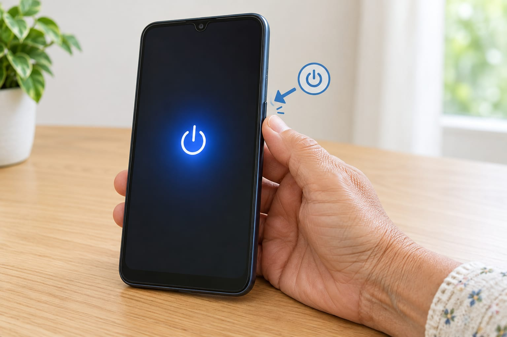
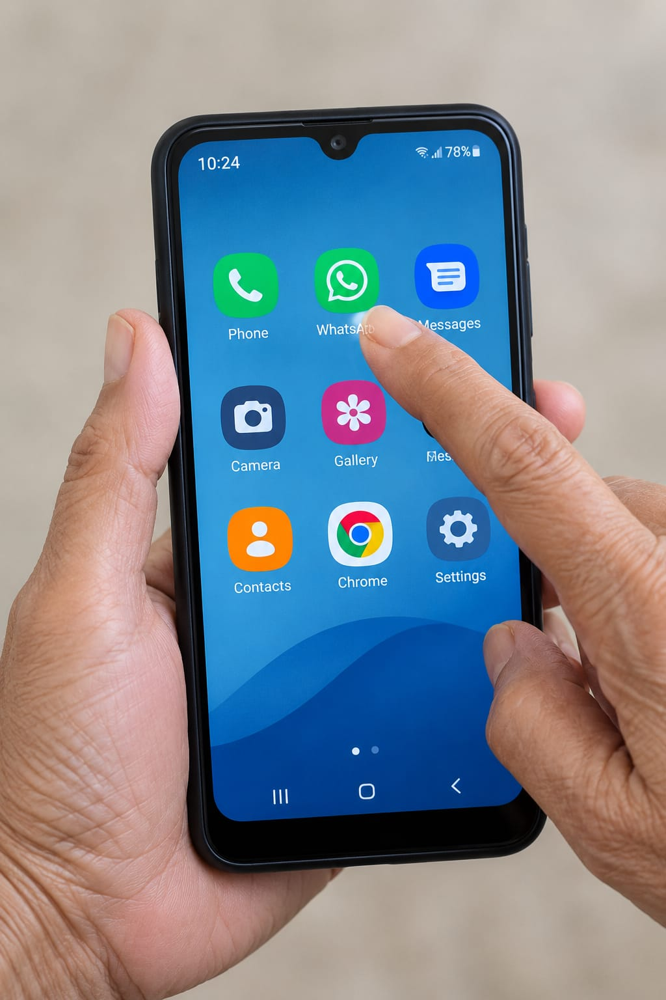
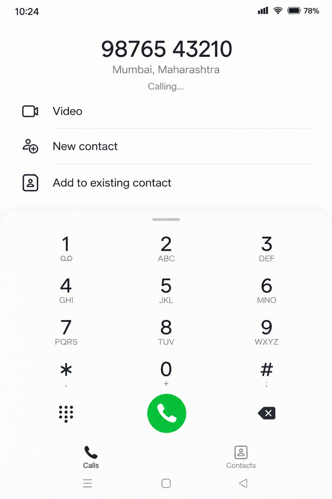
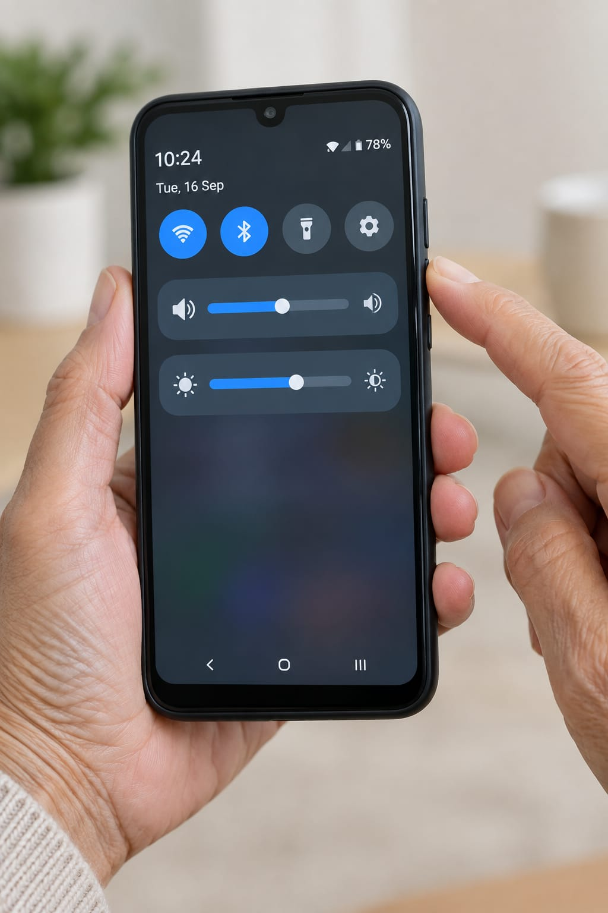

Smartphone Basics
A short video, then five simple lessons you can go through at your own pace.
Pick a video on YouTube, click Share → Embed, and replace VIDEO_ID above with the code it gives you.

Lesson 1
Turning your phone on and off
Find the power button, usually on the side of the phone.
Press and hold it for 2–3 seconds — a quick tap won't do anything.
Lesson 2
Unlocking the screen
Swipe up from the bottom, or enter your PIN if you've set one.
If nothing happens, the screen may just be asleep — tap the power button once first.

Lesson 3
Understanding the home screen
Each picture is an app. Tap once to open it — no need to press hard.
To go back, look for a back arrow or swipe from the edge of the screen.

Lesson 4
Making a call
Open the Phone app, tap Contacts, choose a name, then tap the green call button.
To answer an incoming call, slide or tap the green icon; the red one ends it.

Lesson 5
Volume and brightness
The buttons on the side of the phone raise and lower the volume.
For brightness, swipe down from the top of the screen to find a quick slider.
Try it yourself — tap the gold power button on the side
Screen off
Tap and hold the button for 2–3 seconds in real life.